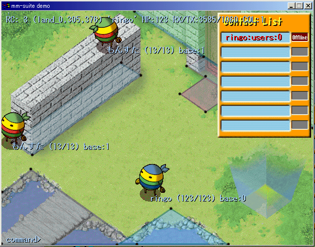

win32用デモプログラム解説
win32用デモプログラム(wincli)の内容
wincli とは，DirectX を使って Windowsにおいて動作する，
mm-suite のテスタである．簡単なスプライト表示を使ってキャラクターを表示する．
以下はスクリーンショットである．

画面に表示されているキャラクターは，真中の1体がプレイヤーキャラクターで，
それ以外がNPCである．NPCは1秒に1回移動するように設定されていて，
名前などが表示されている．
右上の欄はコンタクトリストである．
画面の一番下にはコマンドラインの入力行があって，
ここから CUI を通して，コマンドを入力できるのが通常のゲームとは異なる．
また，画面にあるひし形の図形は当たり判定ポリゴンの様子である．
mm-suite ではサーバとクライアントの両方でポリゴンによる当たり判定を
実装しているが，その様子が示されている．
画面右下の特殊な場所はワープゾーンで，別のフィールドへの
ハイパーリンクとなっている．
wincli を使って，
mm-suite の初期状態でサポートしている機能をすべて試すことができる。
ただしすべての機能に GUI 的にアクセスできるわけではなく、
画面に表示されている擬似コマンドラインを通してしかできない事もある。
仮想コマンドラインによる接続、ログイン
デモプログラムでは、すべての操作を仮想コマンドラインから実行できる
ようになっている。もちろん移動や攻撃などの基本動作は、
マウスでもできる。
ここでは仮想コマンドラインを使ってサーバに接続、
ログインする所までを説明する。例を示す。
command>connect HOSTNAME PORTNUM
command>msgconnect HOSTNAME PORTNUM
command>user test_user password
command>newchar NAME HP_HINT
command>login 0
たとえば、次のように入力する。
command>connect 192.168.1.203 9001
command>msgconnect 192.168.1.203 5001
command>user test_user password
command>newchar NAME 10
command>login 0
とすると接続、ログインできる。
connectをおこなった後に
msgconnectでメッセージサーバに対しても接続をおこなう。
接続後、まず user をした後、
キャラを作らないとログインできない(エラー4)
になることに注意。これらの段階は飛ばすことはできない。
newcharでは新しいキャラクタを作っている。
2回目以降は、あたらしいキャラクタを作る必要はない。
各種コマンド
現在デモプログラムでは以下のコマンドをサポートしている。
- connect [HOST] [PORT]
サーバに接続する。
connect extdev.vce-lab.net 9001
connect 192.168.0.103 12345
など。ホスト、ポート番号は SWP が動作しているホスト、ポートを指定
すること。
- msgconnect [HOST] [PORT]
メッセージサーバに接続する。
msgconnect extdev.vce-lab.net 5001
msgconnect 192.168.0.103 12347
など。
- clear
画面に表示されている文字をクリアする。
- ping
サーバに ping を撃つ。
- logout
キャラクタをログアウトさせ、DBSV に保存する。
- close
コネクションを閉じ、サーバから抜ける。この後ふたたび
connect することができる。
- netstat
現在、ネットワークが利用可能かを見る。
- exit
デモプログラムを終了する。
- help
ヘルプメッセージを画面に出す。
- guildhelp
ギルド関連のヘルプメッセージを画面に出す。
- user UID PASS
ユーザー名とパスワードを指定して GMSV、MSGSV に接続する。
user ringo hogehoge_password
- newchar NICKNAME HP
新しいキャラクタを作成する。 HP は作成されるキャラクターの HP をあらわす。
newchar testChar 123
GMSV から、何番目のキャラクタースロットにキャラクタを作成
したかが返ってくるので、この後の login 時にその番号を指定する。
- delchar SLOTNO
キャラクタを削除する。キャラクターを作成したときのスロット番号で
指定する。
- login SLOTNO
キャラクターを指定してログインする。
GMSV はキャラクター構造体を1個新規に確保して世界の中に
キャラクターを存在させる。
- talk TEXT TEXT ...
チャットメッセージを送信する。
画面内の、近距離にいるキャカラクターに対して、
メッセージを同報送信する。 NPC でチャットに反応する設定をもっている
のがいる場合は、talked 関数が反応する。
- whisper UID NICK TEXT TEXT ...
チャットメッセージを送信する。
UIDとNICKで指定したキャラクターに対してのみメッセージを送信する。
- guild GUILD_ID TEXT TEXT ...
チャットメッセージを送信する。
GUILD_IDで指定したギルドに所属するキャラクターに対してのみメッセージを送信する。
- union UNION_ID TEXT TEXT ...
チャットメッセージを送信する。
UNION_IDで指定したユニオンに所属するギルドマスターに対してのみメッセージを送信する。
- mail UID NICK TEXT
ユーザーIDとキャラクターのニックネームを指定してメールを送信する。
MSGSV はメールを受信するとそのユーザーのメールボックスに保存する。
自分を指定すると自分に届く。(pollmail関数で受信要求すると来る)
- delmail MESSAGE_ID
自分のメールボックスにあるメールを消す。
- pollmail NUM
自分のメールボックスに保存されているメールを取りだす。
最大何個取りだすかを指定する。
- addlist UID NICK
自分のコンタクトリストにユーザー名とニックネームををつけて追加する。
- dellist UID NICK
自分のコンタクトリストからキャラクターを削除する。
- runlevel RUNLEVEL
クライアントプログラムの実行状態を変更する。
- coll map|char on|off
マップやほかのキャラクタとのローカルにおける衝突判定を on/off
する。 現在はマップとの衝突判定だけがサポートされている。例：
coll map on
- contactstatus NUMBER
コンタクトリストのオプションフラグを変更する。
変更はほかのクライアントに伝わる。
- gettags
所有しているキャラクターのタグリストを取得する。
どんなキャラを持っているのかを画面に表示して選択させたいゲームの場合は、
このコマンドに相当する処理を行なう。
- newguild GUILDNAME
新しいギルドを作成する。
newguild testGuild
MSGSV から、作成したギルドのギルドIDが返ってくる。
ギルド作成者はギルドマスターとなる。
- renguild GUILD_ID GUILDNAME
ギルドの名前を変更する。
renguild 1 hogeGuild
- delguild GUILD_ID
ギルドを削除する。ギルドを作成したときのギルドIDで
指定する。デモプログラムでは、削除するギルドがユニオンに所属しているか
どうかのチェックは行っていない。
- getguildlist
キャラクターが所属しているギルドのリストを取得する。
1キャラクターが複数ギルドに所属可能なゲームの場合は、
このコマンドに相当する処理を行なう。
- getguildinfo GUILD_ID
ギルドの情報を取得する。
- getguildmember GUILD_ID UID NICK
ギルドに所属するキャラクターの情報を取得する。
getguildmember 1 ringo testChar
指定したキャラクターがギルドに所属していれば、
MSGSV から0が返ってくる。
- addguildmember GUILD_ID UID NICK
ギルドにキャラクターを追加する。
- delguildmember GUILD_ID UID NICK
UIDとNICKで指定したキャラクターをギルドから削除する。
- newguildmaster GUILD_ID UID NICK
ギルドマスターを変更する。
UIDとNICKで指定したキャラクターが新しいギルドマスターとなる。
ただし、コマンドを実行するキャラクターがギルドマスターであることが前提。
デモプログラムでは、権限の確認を行っていない。
- newunion UNIONNAME GUILD_ID
新しいユニオンを作成する。
newunion testUnion 1
MSGSV から、作成したユニオンのユニオンIDが返ってくる。
GUILD_IDで指定したギルドのギルドマスターがユニオンマスターとなる。
- renunion UNION_ID UNIONNAME
ユニオンの名前を変更する。
renunion 1 hogeUnion
- delunion UNION_ID
ユニオンを削除する。ユニオンを作成したときのユニオンIDで
指定する。
- getunionlist GUILD_ID
GUILD_IDで指定したギルドが所属しているユニオンのリストを取得する。
1ギルドが複数ユニオンに所属可能なゲームの場合は、
このコマンドに相当する処理を行なう。
- getunioninfo UNION_ID
ユニオンの情報を取得する。
- addunionmember UNION_ID GUILD_ID
ユニオンにギルドを追加する。
- delunionmember UNION_ID GUILD_ID
GUILD_IDで指定したギルドをユニオンから削除する。
- newunionmaster UNION_ID GUILD_ID
ユニオンマスターを変更する。
GUILD_IDで指定したギルドのギルドマスターが新しいユニオンマスターとなる。
デモプログラムでは、権限の確認を行っていない。
- guildmes 1 GUILD_ID TEXT
自分のギルドメッセージを更新する。
ギルドメッセージは所属しているキャラクタごとに1つ保存される。
- guildmes 0 UNION_ID TEXT
ユニオンメッセージを更新する。
ユニオンメッセージは1ユニオンにつき1つ保存される。
- getguildmes GUILD_ID UID NICK
UIDとNICKで指定したキャラクターのギルドメッセージを取得する。
- getunionmes UNION_ID
UNION_IDで指定したユニオンのユニオンメッセージを取得する。
- gsmes UID NICK TEXT
ユーザーIDとキャラクターのニックネームを指定してギルドシステムメッセージを送信する。
MSGSV はメッセージを受信するとそのユーザーのメッセージボックスに保存する。
自分を指定すると自分に届く。(pollgsmes関数で受信要求すると来る)
- pollgsmes
自分のメッセージボックスに保存されているギルドシステムメッセージを取りだす。
最古のメッセージ1件のみを取得する。
- delgsmes MESSAGE_ID
自分のメッセージボックスにあるギルドシステムメッセージを消す。
攻撃アクション
wincli プログラムでは、右クリックを使って「攻撃」ができる。
画面上では、小さい攻撃オブジェクトが飛んでいるように見えるが
サーバでは攻撃オブジェクトは飛ばさず、 線分と矩形の当たり判定をしている。
攻撃がヒットして HP が変化したら、変化したキャラクターを震えさせている。
GMSVチートコマンド
GMSV にはチート用コマンドも実装されている．
command>talk @@ hoge put-npc-near monster0
という感じで、デバッグ用チートコマンドを送れば、GMSV の
debug.c のコマンド処理プログラムで処理されて何でもテストできる。
この機構は開発に便利である。(hogeはパスワード)
実際にゲームの運用を開始する場合は、この機能をサーバ側で削除するか、
パスワード管理をキッチリやる必要がある。
index に戻る
Copyright 2000-2005 CommunityEngine Inc. All rights reserved.